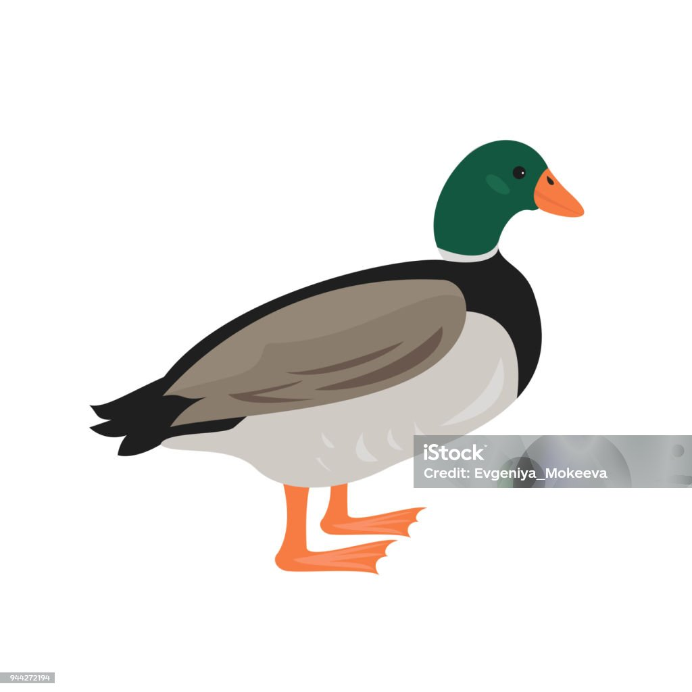

Casa Krüger

⚠️
Na Página Inicial existe uma pré-demonstração desse casarão!
Bem-vindo(a) á Casa Krüger

A Casa Krüger, localizada em Joinville, Santa Catarina, é uma das mais antigas e icônicas construções da cidade. Ela representa a arquitetura colonial alemã, estilo trazido pelos imigrantes que chegaram à região em meados do século XIX. Construída por volta de 1870, a casa possui uma estrutura em enxaimel, caracterizada pelo uso de madeira entrelaçada e preenchida com tijolos, técnica comum nas construções germânicas daquela época. O nome "Casa Krüger" deriva da família Krüger, que habitou o local por diversas gerações e teve um papel importante na preservação do patrimônio e da memória cultural da cidade.
Histórico
Fundação e Construção
A construção da Casa Krüger ocorreu por volta de 1870, durante o período de colonização europeia em Joinville. Foi erguida por membros da família Krüger, que se estabeleceram na região como agricultores e comerciantes. A estrutura de enxaimel, caracterizada por seu esqueleto de madeira preenchido com tijolos, reflete as tradições construtivas da Alemanha, adaptadas ao clima e aos materiais locais do Brasil. Essa técnica era comum entre as primeiras famílias de imigrantes, pois aproveitava os recursos naturais disponíveis e oferecia resistência às condições climáticas.
A Família Krüger
A família Krüger desempenhou um papel importante na história de Joinville. Os primeiros membros da família que se estabeleceram na cidade participaram ativamente do desenvolvimento da agricultura local e contribuíram para o crescimento da comunidade alemã na região. Além da agricultura, a família Krüger envolveu-se no comércio local, ajudando a dinamizar a economia da então jovem colônia de Joinville.
“Era a casa da vovó. Quando ia para Joinville com meus pais, dormia no quarto com ela.” Entre suas lembranças mais antigas está o quarto da avó, recoberto com papel de parede com grandes rosas amarelas. “E o pão que ela fazia… Fazia pão de batata e levava na Confeitaria Dietrich para assar.” Nas recordações de menina ainda estão a cozinha com uma despensa, onde não faltavam o melado e o açúcar cristal.
Arquitetura
A casa é conhecida por sua beleza arquitetônica e valor histórico, simbolizando o modo de vida dos primeiros colonizadores da região. Além de sua estrutura em enxaimel, ela é cercada por um jardim que adiciona um charme especial ao ambiente, oferecendo um vislumbre do paisagismo típico das antigas residências alemãs. A preservação da Casa Krüger é fundamental para a manutenção da identidade cultural de Joinville e o reconhecimento das contribuições dos imigrantes na construção da cidade.
Importância Cultural
Atualmente, a Casa Krüger funciona como um ponto de preservação histórica e cultural em Joinville, sendo parte do roteiro de turismo cultural da cidade. Embora seja uma construção privada e de propriedade familiar, seu valor histórico faz dela uma parada importante para visitantes interessados em arquitetura, cultura e história da imigração alemã.
A casa é um marco para estudos e visitas guiadas sobre a arquitetura de enxaimel, um estilo raro e valioso no Brasil. Não há atividades comerciais permanentes no local, como um museu ou centro cultural ativo; no entanto, a casa é mantida em bom estado de conservação e aberta para visitações agendadas em ocasiões específicas, como durante eventos de preservação do patrimônio de Joinville e visitas escolares ou acadêmicas.
 Excursão em 2012
Excursão em 2012